積み上げ3D曲面図
3D-Stack-Surface
サマリー
このチュートリアルは異なる行列オブジェクトから積み上げ3Dカラーマップ曲面を作成する方法を示します。表面は火山が噴火する前と後のトポロジーの変化を示しています。

必要なOriginのバージョン: Origin 2015 SR0以降
学習する項目
このチュートリアルでは、以下の項目について解説します。
- 積み上げ3Dカラーマップ曲面を作成する
- 軸表示とレイヤプロパティを編集する
- 3Dプロットをサイズ変更して回転する
ステップ
複数カラーマップ曲面図の作成
- (ヘルプ: ラーニングセンター メニューを選択、または キーボードのF11 キーを押して、ラーニングセンターを開きます。グラフサンプルを選択し、カテゴリーのドロップダウンリストから3D曲面図を選択します。グラフサンプルをダブルクリックして、「3D
Surface Plots - Stacked 3D Surface Plots」を開きます。
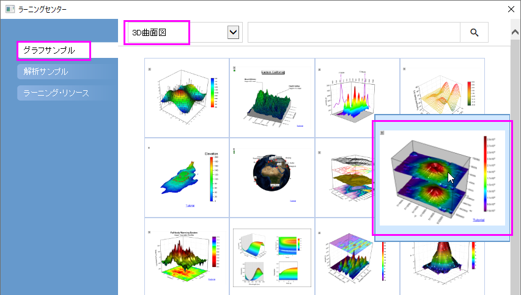
このチュートリアルは、チュートリアルデータプロジェクト<Origin EXE フォルダ>\Samples\TutorialData.opjのStacked
3D Surface Plots フォルダと関連しています。
- 2つの行列オブジェクトがあるMbook1行列ブックをアクティブにし、作図：3D：複合カラーマップ曲面と操作して、3D曲面図を作成します。以下のような図になります。
- 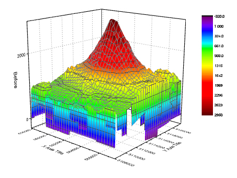
- グラフをダブルクリックして、作図の詳細ダイアログを開きます。左側パネルが開いていない場合、左下の矢印ボタンをクリックして開きます。左パネルで、Layer1ノードの下に2つの曲面プロットを確認できます。噴火後（”After”
eruption）曲面をZ軸でシフトするには、左側パネルでLayer1の下にある2つ目のプロットを選択し、面タブを開きます。Z方向に移動-スケール範囲(パーセント)は0から100までにチェックをつけ、テキストボックスに70を入力します。
- 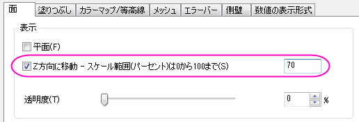
- 塗りつぶしタブを開き、表面セクションでは、自身のチェックを外して、他の曲面の等高線と同じ行列オブジェクト（Mat(1)："Before"）で塗りつぶします。
- 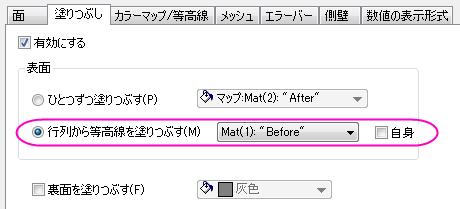
- カラーマップ/等高線タブを選択します。レベルヘッダをクリックして、レベルの設定ダイアログを開きます。次の図のようにパラメータを設定し、OKをクリックします。
- 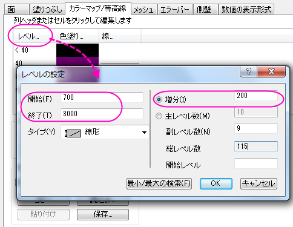
- 等高線図を有効にするのチェックを外して、等高線を非表示にします。OKをクリックします。
- 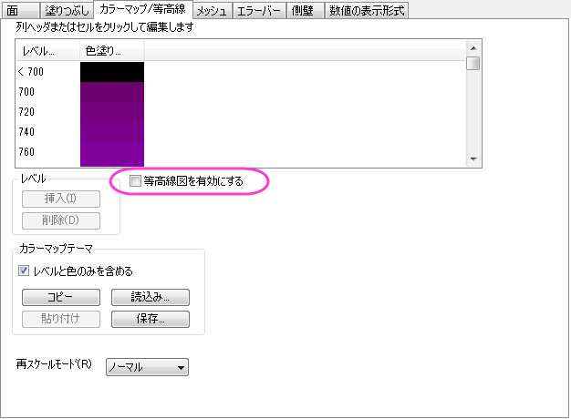
- メッシュタブを開き、有効にするチェックを外し、メッシュ線を消します。
- Layer1ノードの下にある1番目のプロットでもステップ5と6を繰り返します。
- このプロジェクトでは2つの曲面は同じ行列で塗りつぶしを行っているので、同じ色スケールを共有できます。色スケールを編集するには、色スケールをダブルクリックし、色スケール制御ダイアログを開きます。レイアウトグループで列の反転のチェックをし、色スケールの幅を100にします。OKをクリックします。
- 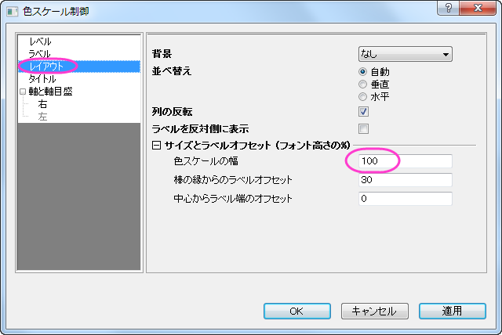
軸表示の編集
次の操作は軸のスケールと目盛ラベル形式を軸ダイアログで設定します。このダイアログを開くには フォーマット：軸スケール：X軸と選択します。
- スケールタブで設定を編集します。
- X 軸(Xアイコン)で、開始と終了をそれぞれ558000と566500に設定します。Y
軸(Yアイコンをクリック)では開始を5108200、終了を5121800に、Z軸(Zアイコンをクリック)では開始に0、終了に10000を入力します。
- X軸（Xアイコンをクリック)では主目盛のタイプをカウントにし、カウントを5にします。Y軸とZ軸では主目盛のタイプを増分にし、値を2000にします。全ての副目盛を非表示にするには、全ての軸で副目盛のカウントを0にします。
- 軸目盛ラベルを編集します。
- まず、軸ダイアログの上にある、各方向で1つの軸のみを使用にチェックが付いている事を確認してください。
- 目盛ラベルタブでCtrlキーを押しながらX、Y、Zのアイコンをクリックし、一度に編集します。表示グループでカスタムを選択し、カスタムフォーマットではP*3をドロップダウンリストから選択します。これは、軸ラベルが10のべき乗で表示され、有効桁数は3桁まで表示する事を示します。OKをクリックします。なお、このドロップダウンリストのオプションに関してはカスタム表示型式を参照してください。
- 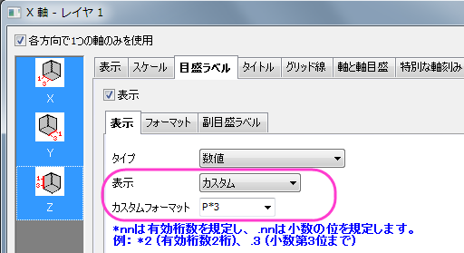
レイヤのプロパティの編集のカスタマイズ
- プロットの外側である白い部分をダブルクリックするか、メニューからフォーマット：作図の詳細（レイヤ属性）を選択して作図の詳細（レイヤ属性）ダイアログを開きます。
- 右側パネルにある、その他の3Dオプションタブをアクティブにします。クリッピングセクションの設定の通りに画像を軸外に付けたいので、クリッピングセクションにある有効にするにチェックをつけます。
- 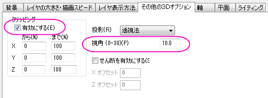
- 平面タブではすべての面の色を明るい灰色に設定します。立方体セクションでは立方体の境界を表示するために、ドロップダウンリストから正面角を選択します。
- 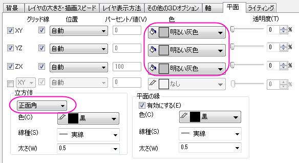
- ライティングタブを開きます。モードセクションでは、平行光源を選択してライティングモードを有効にします。光の色を次の画像のように設定します。OKをクリックします。
- 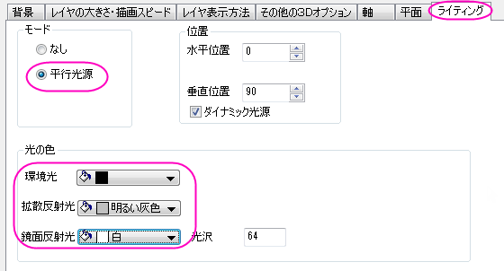
プロットのサイズ変更と回転
- 3Dツールバーをアクティブにするため、立方体をクリックします（プロットではありません）。リサイズボタン 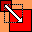 をクリックすると、3Dデカルト座標が表示されます。カーソルをY軸に乗せると選択されるので、それをドラッグ＆ドロップでY軸の方向に引き延ばしたり縮めたりできます。同じようにX方向とZ方向も操作します。
- 回転ボタンをクリックして、回転モードをアクティブにします。プロットの中心に球が表示されます。グラフを回転させましょう。
- 3Dツールバーは自由にプロットのサイズを変更したり、回転させることができます。しかし、Graph1と同じ表示にするには、レイヤプロパティで軸を次の図のように設定すると行えます。
- 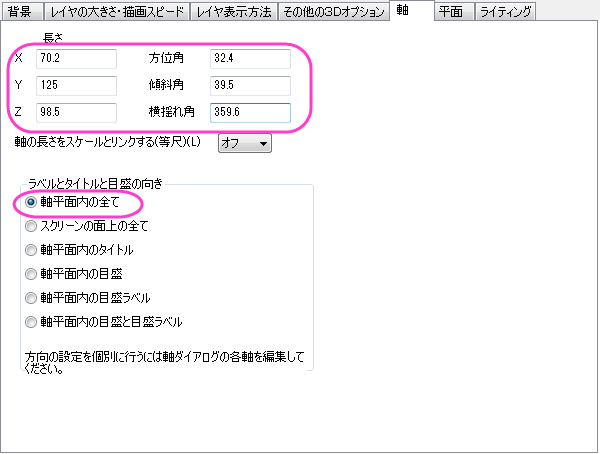